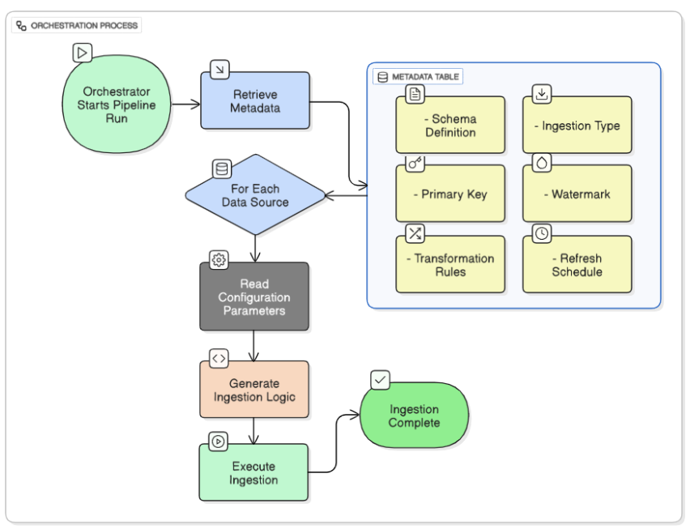
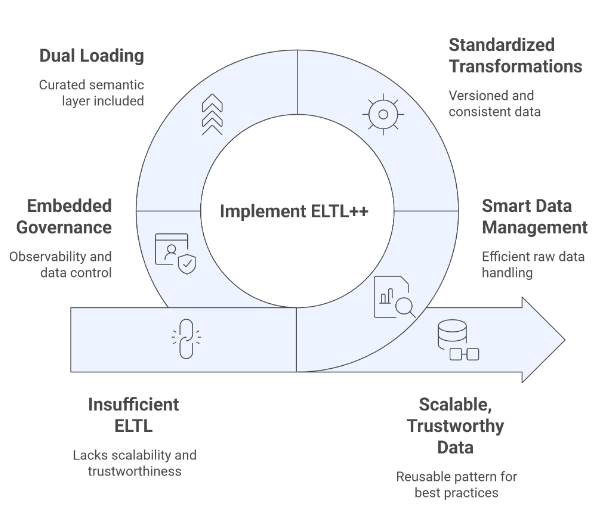
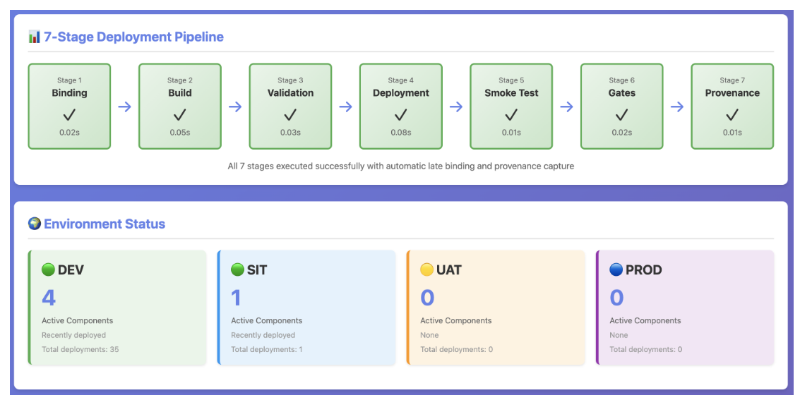
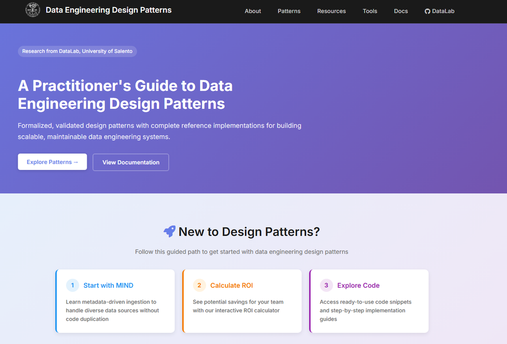

Pattern-Driven
Data Engineering
Formalizing Systematic Solutions for Cloud-based Data Lakehouses
PhD Candidate Chiara Rucco
Supervisors: Prof.ssa Antonella Longo · Dr. Motaz Saad
Engineering of Complex Systems · Dept. of Engineering for Innovation · University of Salento
Defense Agenda
Eight sections — from motivation, through three formalized patterns, to validation and impact.
From open challenges to research questions
A Multivocal Literature Review (MLR) — combining 165 academic and practitioner (grey-literature) sources — surfaced four recurring gaps. Each maps one-to-one to a focused research question, shown by the → arrows.
Beyond Tooling — A Pattern Language for Data Engineering
Software engineering has had a shared pattern language for 30 years. Data engineering still has none.
A shared vocabulary — context, problem, forces, solution, consequences — that made software design reusable, teachable and comparable.
Only point tools (Atlas, dbt, Terraform…) and vendor blueprints — technology-bound, non-portable, with no formal structure to reason about design.
The contribution is not a new tool. It is the first systematic application of GoF/POSA architectural pattern methodology to data engineering — one formalized, cloud-agnostic pattern for each stage of the pipeline.
Design Science Research + POSA Pattern Template

DSR 6-stage process (Peffers et al. 2007), mapped to this thesis — problem identification through to communication.
POSA template — 7 elements, uniform across all 3 patterns
Novel: explicit forces & consequences per pattern enable reproducible comparison and systematic selection.
MIND
Metadata-Driven Ingestion Design Pattern
“Ingestion should scale by metadata growth — not by pipeline code growth.”
- ProblemN heterogeneous sources → N bespoke pipelines, no reuse
- IdeaOne Unified Metadata Table (UMT) describes every source declaratively
- ResultA generic engine reads the UMT and builds pipelines at runtime

Orchestrator reads the Metadata Table → generates & executes ingestion per source
The N-source problem — and why existing tools fall short
100+ heterogeneous source types — REST, RDBMS, streams, blobs. Each gets its own bespoke pipeline → O(N) maintenance, no reuse, and schema changes break code.
State of the art — and its limitations
Metadata catalogs — document assets but do not drive pipeline execution.
Connector toolkits — still one configuration per source, vendor-bound, no runtime strategy selection.
Organisational guidance only — no concrete, reusable ingestion mechanism.
No prior tool combines multi-source + cloud-agnostic + runtime strategy + empirical validation. That gap motivates MIND.
MIND as a POSA pattern — Context · Forces · Consequences
The pattern is formalized, not just implemented: stakeholders and constraints are made explicit so it can be reused and compared.
Cloud lakehouses ingesting REST, RDBMS, streams & blobs under continuous schema evolution, across multiple cloud providers.
- · O(N) maintenance vs. reuse
- · Schema changes break code
- · Vendor lock-in vs. portability
- · Full vs. incremental loads
- ✓ New source = 1 INSERT, 0 code
- ✓ Schema drift absorbed by UMT
- ✓ Same engine on any cloud
- ⚠ UMT schema must be governed
A single Unified Metadata Table declaratively describes every source; a generic, cloud-agnostic engine reads it and builds + executes the right ingestion pipeline at runtime.
One Unified Metadata Table governs N sources
Sample UMT — adding a source = one row, no code change
| source | type | strategy | watermark | key |
|---|---|---|---|---|
| crm_api | REST API | full | — | customer_id |
| orders_db | PostgreSQL | date_incr | updated_at | order_id |
| clicks | Kafka stream | hybrid | event_ts | event_id |
| + new source → INSERT 1 row → engine picks it up automatically | ||||
How it overcomes the state of the art
| Capability | SOTA | MIND |
|---|---|---|
| Multi-source, one mechanism | ○ | ✓ |
| Cloud-agnostic | ○ | ✓ |
| Runtime strategy selection | ○ | ✓ |
| Empirically validated | ○ | ✓ |
Validated on 2 clouds — experts confirm real-world utility
3-phase validation

Literature gap closed
MIND is the first to combine multi-source + cloud-agnostic + runtime strategy + empirical validation in one reusable pattern.
Known Uses
- ▸ Azure: ADF + Databricks — hash-incremental @1B rows
- ▸ GCP: CockroachDB + Colab — date-watermark ingestion
- ▸ Healthcare: 30+ IoT + EHR sources via one UMT
ETLT++ / ELTL++
Formalizing Hybrid Transformation Timing as Design Patterns
“78% of teams already do hybrid ETL/ELT — but informally. Let's give it a formal name and structure.”
- ProblemNo formal criteria for when to transform → quality incidents
- IdeaTwo POSA patterns + a decision framework for timing
- ResultThe ++ adds contracts, validation gates & semantic versioning
Give ETLT & ELTL a formal POSA structure: context, forces, solution, consequences.
Add explicit steps: data contracts, validation gates, quarantine for rejects, and semantic versioning for deterministic replay.
Hybrid transformation is everywhere — but undefined
Teams mix ETL and ELT informally with no formal decision criteria and undefined data contracts — so quality issues surface late, in production.
State of the art — and its limitations
SQL tests in an ELT-only paradigm, tool-bound — no formal timing criteria.
Platform-specific engines — do not transfer across technologies.
Treated as a binary choice — no contracts, no quarantine, no versioned replay.
None offer formal hybrid timing + contracts + semantic versioning that transfer across tools. The ++ patterns do.
Formalizing ETLT & ELTL as POSA patterns
The hybrid practice gets a formal definition: ETLT and ELTL share one POSA structure (context & forces) but resolve it differently. The “++” layers four enhancements on top of each.
Cloud lakehouses where quality, raw fidelity, cost & compliance all matter and pull in different directions.
- · Quality gate vs. raw fidelity
- · Storage cost vs. replayability
- · Latency vs. compliance
- · No single ETL/ELT satisfies all
- ✓ Deliberate, documented timing
- ✓ Contracts catch errors early
- ✓ Both coexist in one lakehouse
- ⚠ Extra orchestration steps
ETLT++ & ELTL++ — stage by stage
- 1 · Extract — pull raw records from sources
- 2 · T₁ quality — enforce data contract, quarantine rejects
- 3 · Load — write validated rows to the lakehouse
- 4 · T₂ business — apply business logic for serving
- 1 · Extract — pull raw records from sources
- 2 · Load raw (L1) — immutable raw layer + time travel
- 3 · Transform — validate & curate against contract
- 4 · Load curated (L2) — serving-ready, versioned
Pattern architecture — ETLT++ & ELTL++ flows

Sample — data contract (the T₁ gate)
- order_id: {type: int, not_null: true}
- amount: {type: decimal, min: 0}
on_violation: quarantine
Sample — immutable raw layer (L1)
raw/orders/ingest_date=2025-06-09/ ← snapshot v1
raw/orders/ingest_date=2025-06-10/ ← v2 (appended)
# corrections add a NEW snapshot, old stays
SELECT * FROM raw.orders TIMESTAMP AS OF '2025-06-09'
Overcomes SOTA: contracts + semantic versioning are tool-independent (portable across dbt, Spark, SQL). ★ Both coexist — ETLT++ for latency-sensitive streams, ELTL++ for compliance & replay.
Faster queries, lower cost, full contract compliance
Literature gap closed
The ++ patterns deliver formal hybrid timing + contracts + semantic versioning that transfer across technologies — which dbt, Mapping Data Flows & DLT cannot.
Benefits — from the validation case study
69% TCO reduction with ELTL++: raw kept in cheap object storage, compute runs only on the curated L2 layer instead of reprocessing everything.
100% contract compliance — 5,000 bad rows quarantined before load, so zero malformed records reached consumers.
3.3× faster queries on the partitioned, curated L2 versus querying raw L1 directly.
★ Interpretation: ETLT++ when pre-load quality dominates; ELTL++ when raw fidelity, replay & cost dominate.
EADF
Environment-Aware Deployment Framework
“Author once, bind the environment at deploy time — eliminate config drift by construction.”
- ProblemTeams hardcode dev/test/prod values into each pipeline → configs drift apart and changes can’t be audited
- IdeaAuthor the pipeline once with placeholders; bind the real environment values only at deploy time (late binding)
- ResultThe same artifact promotes dev → test → prod — gated by quality checks, with an immutable provenance log

Prepare → Validate → Gate evaluation → Provenance → Deploy
Config drift — the silent cost of early binding
Environment values are hardcoded at authoring time → drift between dev/test/prod, no audit trail, and failed promotions discovered only after deploy.
State of the art — and its limitations
Provision infra & deploy apps — no data-quality promotion gates.
Orchestrate workflows — do not model data-artifact promotion or provenance.
Handle storage & governance — no environment-aware deployment pattern.
None model data-artifact promotion with quality gates. EADF is the first pattern-level solution.
EADF as a POSA pattern — Context · Forces · Consequences
Late binding becomes a formal pattern: the same artifact is authored once and bound to its environment only at promote-time.
Promoting pipelines, dbt models, schemas & DAGs across dev / test / prod and multiple clouds.
- · Early binding → drift & lock-in
- · Governance needs audit
- · Reproducibility vs. speed
- · Multi-cloud portability
- ✓ Bind env at promote-time
- ✓ Drift eliminated by construction
- ✓ Immutable provenance trail
- ⚠ Complements Terraform, not replaces
Author the pipeline once with placeholders; four YAML descriptors then bind the environment, run quality gates and record immutable provenance — so the same artifact promotes dev → test → prod with zero drift.
4 late-binding YAML descriptors
The pattern structure
sink: { url: ${env.warehouse_url} }
# environments.yaml — bound at DEPLOY
dev: { warehouse_url: dev-wh.local }
prod: { warehouse_url: prod-wh.cloud }
# promotion.yaml gate must pass first
gate: { freshness: <6h, error_rate: <1% }
Key principle: the same component.yaml promotes unchanged — drift eliminated by construction, not by discipline.
How it overcomes the state of the art
| Capability | Terraform / CI | EADF |
|---|---|---|
| Late env binding | ✓ | ✓ |
| Data-quality gates | ○ | ✓ |
| Immutable provenance | ○ | ✓ |
| Cross-cloud promotion | partial | ✓ |
★ Complements, not replaces: EADF sits above Terraform/CI to add the data-aware promotion layer they lack.
61% config reduction, 0 drift events — deployment made auditable
Literature gap closed
EADF is the first pattern to model data-artifact promotion with quality gates — beyond what Terraform, CI tools or Delta Lake provide.
Known Uses
- ▸ Azure DEDP: multi-env promotion + provenance logging
- ▸ GCP + Databricks: cross-cloud promotion w/ schema gates
- ▸ Healthcare: HIPAA-regulated deploys w/ audit trails

Can LLMs generate reliable, production-ready data pipelines?
7 Models · 3 Providers · Databricks Serverless · 5 Repeated Runs
OpenAI
GPT-5 Mini
GPT-5 Nano
Anthropic
Claude 4 Sonnet
Claude 3.5 Haiku
Alibaba
3 Pipeline Scenarios — Progressive Complexity
Data Quality Check
API ingest + null checks + Bronze/Silver Delta
Monthly Aggregation
Historical groupBy + partitioned Delta output
Multi-Source Merge
Air + weather join · schema alignment · join logic
5 Evaluation Metrics
Fix Count
Edits needed to reach a working pipeline (0 = first pass)
C&S Score (1–5) primary metric
Correctness × architectural quality
Execution Time (s)
Mean of 5 runs on Databricks Serverless
Pylint / PEP8
Static code quality 0–10
Action Correctness
Expert panel: Fully / Partially / Incorrect
LLMs accelerate pipelines — but hit a complexity ceiling
Fix Counts — all models × all 3 pipeline scenarios
| Model | P1 · Basic | P2 · Medium | P3 · Multi-src | Verdict |
|---|---|---|---|---|
| Claude 4 Opus | 1 | 0 | 0 | Most Reliable |
| GPT-5 Mini | 0 | 0 | 0 | Best All-Rounder |
| Claude 4 Sonnet | 0 | 2 | 0 | Inconsistent |
| GPT-5 Nano | 0 | 1 | 1 | Good Lightweight |
| Qwen3-235B | 1 | 1 | 2 | Moderate |
| GPT-5 | 4 | 2 | 1 | Fastest runtime |
| Claude 3.5 Haiku | 0 | 1 | 8 | Complexity cliff ⚠ |
Key Findings
0–1 fixes across all scenarios
Best runtime: 3–9s
Haiku 3.5: 0 fixes → 8 fixes at multi-source merge
Aggregation logic, join casting, null handling
Human oversight required for semantic correctness
N=21 industry practitioners confirm real-world applicability
Participant Profile
- ▸ Data Engineers (38%) · Data Architects (24%) · Platform Engineers
- ▸ Average 7+ years in data engineering · 100+ pipeline environments
- ▸ Platforms: Azure, GCP, AWS, Databricks · Multi-cloud (24%)
- ▸ Orgs: startups to enterprise · international sample
“Config management consumes 10–40% of my team's time. A formalized pattern for this would be immediately adopted.”
— Senior Data Architect, survey respondent
“We've done ETLT-like flows for years without knowing it had a name. A formal decision framework changes how I onboard engineers.”
— Principal Engineer, survey respondent
Utility Score per Pattern (1–5 Likert)
Bridging theory and practice in data engineering
★ Takeaway: contributions span theory, method, implementation, industry transfer, evaluation framework, and dissemination — with measurable empirical impact at each level.
Patterns work. Formalism pays off.
Reusable abstractions reduce cognitive load, accelerate delivery, and survive technology churn.
Future Work
- → Pattern catalog expansion (streaming, quality, governance)
- → LLM + pattern-guided automated code generation
- → Regulated industry adaptations (HIPAA, GDPR, SOC2)
Limitations
- ▸ Validated on 2 clouds (Azure + GCP) — other platforms untested
- ▸ Expert survey N=21 — modest sample, broader study needed
- ▸ Three pipeline stages covered — streaming & governance still open
Practitioner uptake
The open pattern catalog has been shared with the data-engineering community and referenced in practitioner blogs as a concrete adoption pathway — evidence the formalism reaches beyond academia.

Chiara Rucco · University of Salento / DataLab · XXXVII Cycle · 2025
Thank you
Chiara Rucco
Supervisors: Prof.ssa Antonella Longo · Dr. Motaz Saad
Relevant publications
- Rucco, Longo & Saad — MIND: a metadata-driven ingestion design pattern for efficient data ingestion. Big Data Research (Elsevier), 2025.
- Rucco, Longo & Saad — Enhancing data ingestion efficiency in cloud-based systems: a design pattern approach. Data Science and Engineering (Springer), 2025.
- Rucco, Longo & Saad — Formalizing ETLT and ELTL design patterns and proposing enhanced variants. arXiv, 2025.
- Rucco, Longo & Saad — Empirical evaluation of LLMs’ capabilities for data pipeline generation on Databricks. Future Generation Computer Systems (Elsevier), 2026.
- Rucco, Longo & Saad — Optimizing data ingestion for big data: a cloud-based design pattern approach. IEEE BigData Congress, 2024.